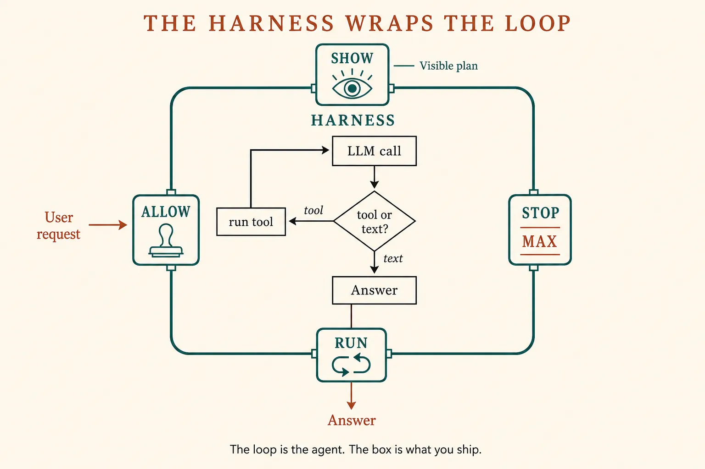
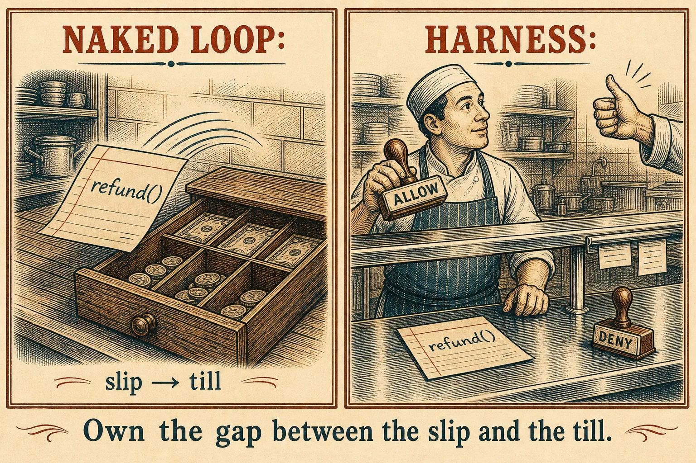
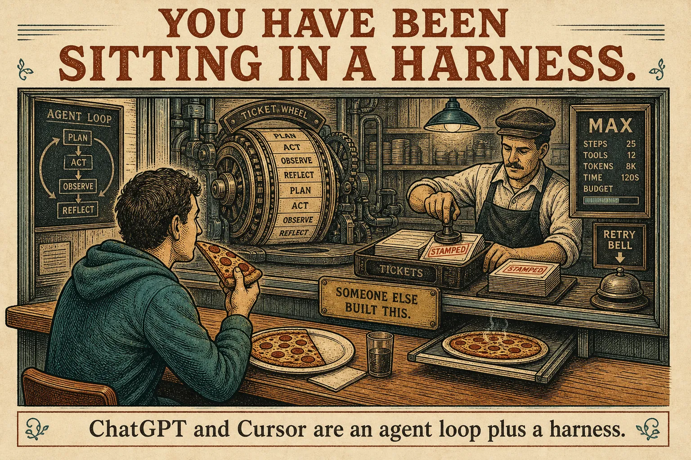

Harnesses
The box around the loop
Lesson 0006 gave you an agent: a while-loop where the model picks the next tool. A harness is not a second model. It is the software you wrap around that loop so the program is allowed to run in the real world.
What this is. The runtime around the agent you write: who may run a slip, what happens when the kitchen times out, when the loop must stop, and whether the plan is visible. LangChain’s core agent is “an LLM, running in a loop, calling tools.” The harness is everything you add around that sentence. Deep Agents vs LangChain vs LangGraph
What this is not. Skills, compaction, sub-agents, graphs. A fat harness also does those — they wait. Tonight is four jobs. Not a ChatGPT menu item named “Harness.”
- 1 · AllowMay this slip run? Sandbox, or a human stamp.
- 2 · RunExecute. On failure, paste the error. Retry.
- 3 · StopDone, MAX steps, timeout, or pause for a person.
- 4 · ShowThe plan is visible. Do not hide the loop.
Allow · run · stop · show. The inner loop from 0006 does not change.
The loop is small. The product is the box.
Anthropic: an agent is typically just an LLM using tools in a loop — and you still need stopping conditions, sandboxed testing, and a pause for a human at checkpoints. 12-factor agents says the important gap is between the model writing a slip and your code running it. Building effective agents · Factor 8 · Own your control flow

Same loop as lesson 0006. Architecture tonight = what wraps it.
The two programs · pseudocode
# NAKED LOOP — lesson 0006, nothing around it
while steps < MAX:
action = llm(messages, tools)
if action is text:
return action
result = run(action) # slip → till
messages.append(result)
# SAME LOOP, INSIDE A HARNESS
while steps < MAX: # STOP is your rule
action = llm(messages, tools)
show(action) # SHOW the plan
if action is text:
return action
if not allow(action): # ALLOW: sandbox / stamp
messages.append("denied")
continue
result = run_with_retry(action) # RUN: errors become paste
messages.append(result)
What this shows. You are still writing the program. The four extra lines are the harness. Frameworks (Claude Agent SDK, Deep Agents, LangGraph) are catalogues of those lines — useful once you can name the jobs without the catalogue.

Kitchen only to make the gap concrete. The load-bearing picture is the box and the two programs.
Skill: name which job fired
Same agent loop. Four wrappers. On Allow, the loop waits for your stamp — that click is the harness, not the model.
Same loop, four harnesses
You have been sitting in one
ChatGPT, Claude, Cursor, Claude Code: you talk to an agent loop someone else already wrapped. File permissions, the stop button, “run this terminal command?”, retries when a tool fails — that wrapper is the harness. Lesson 0006 asked whether Cursor is an agent or a harness. Both: an agent inside a harness. At work you will write (or pick) the wrapper, not just the while.

Using a product is not the same as shipping the box.
Buy a harness, or write the four lines
LangChain sells the split as layers: a runtime (durable execution, pause/resume), a thin loop, and an opinionated harness on top. Anthropic’s advice still stands: start with the API; if you use a framework, know what it is wrapping. Deep Agents’ extra furniture — filesystem, skills, sub-agents, memory — is a fat harness. We will unpack those pieces later. Same LangChain essay · Anthropic, “When and how to use frameworks.”
Write the four lines when
You need a stamp on one tool, a MAX, and a visible plan. A few dozen lines of your own loop is enough.
Pick a packaged harness when
You already know which jobs you are buying, and you can still see the calls. Do not import a box you cannot name.
Anthropic’s three agent principles, now that you have a harness to hang them on: keep the design simple; show the plan (Show); invest in the tool interface the model sees (Allow + the slips from lesson 0005). Compaction and skills are how a harness spends the window — next lessons, not tonight.
Check
Primary source. The loop-vs-harness split in Deep Agents vs LangChain vs LangGraph. Then the stopping conditions, sandbox, and “show the plan” in Building effective agents (the three principles at the end). For the stamp between slip and run: Factor 8.
Card: the harness. Last architecture: workflow vs agent.